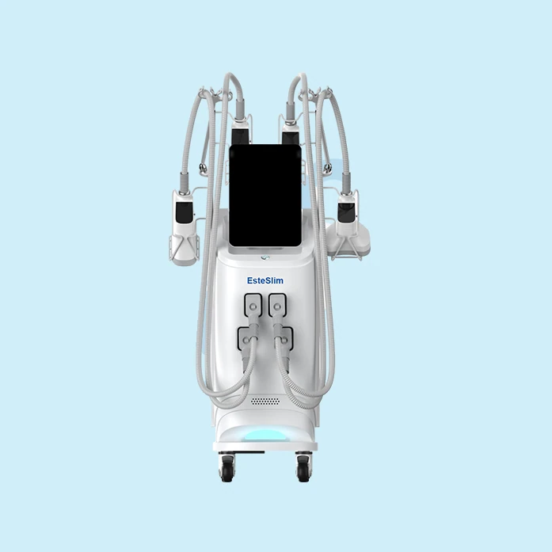
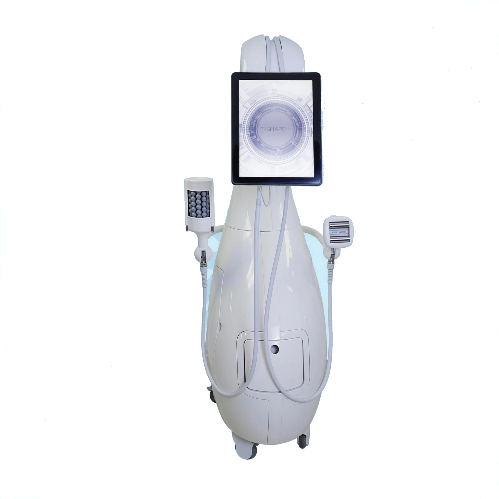
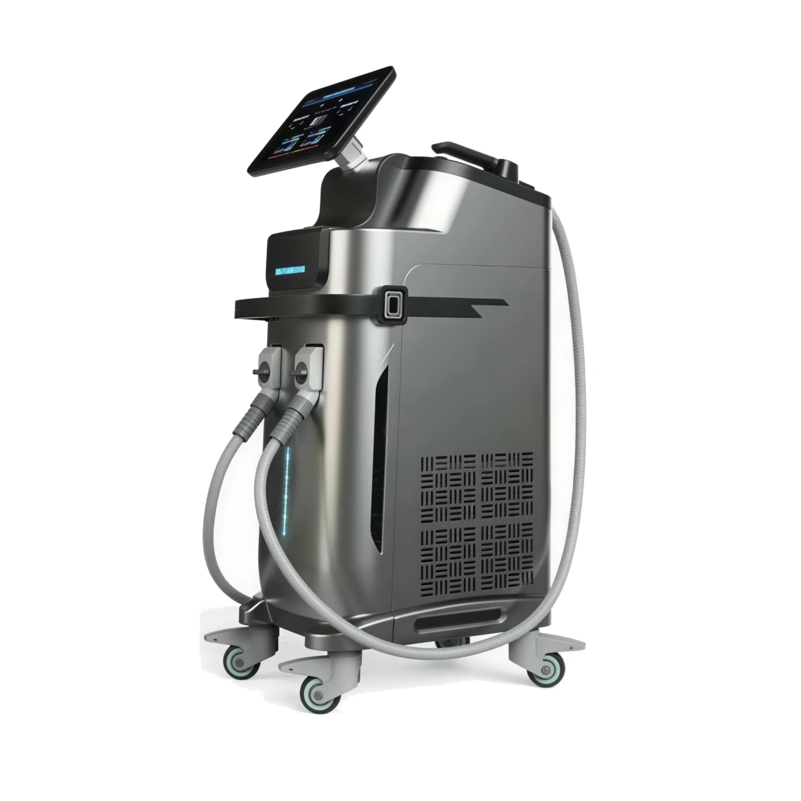
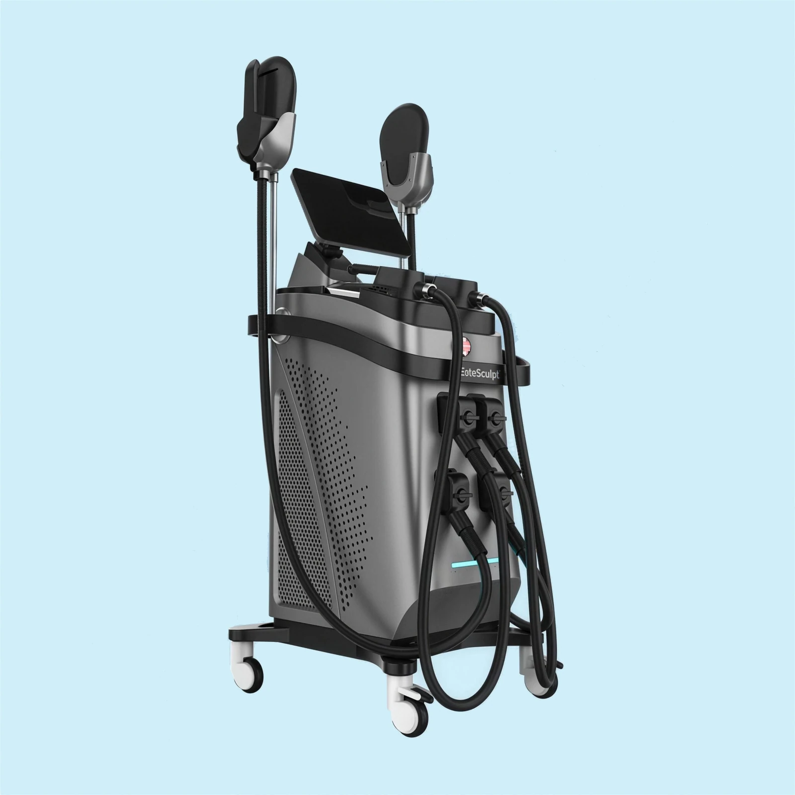

EsteSlim
EsteSlim soğuk lipoliz cihazı vücutta bulunan fazla yağları dondurarak bu yağ hücrelerinin apoptoz olmasına sağlar. Daha sonrasında parçalanan bu yağ hücreleri bağışıklık sistemi tarafından dışarı atılır.
Yetkili personel ile çalışan güzellik merkezleri. Epilasyon endikasyonlu, sınırlı enerji aralığındaki sistemler bu grupta değerlendirilir.
Bu bir ön bilgilendirmedir. Kesin durum; cihazın kullanım amacı beyanı, ÜTS kaydınız ve işletmenizin ruhsat tipiyle birlikte değerlendirilir. Teklif aşamasında birlikte teyit ederiz.Demo talebi, kurulum koşulları ve finansman seçenekleri için arayın: +90 312 466 66 86
EsteSlim soğuk lipoliz cihazı vücutta bulunan fazla yağları dondurarak bu yağ hücrelerinin apoptoz olmasına sağlar. Daha sonrasında parçalanan bu yağ hücreleri bağışıklık sistemi tarafından dışarı atılır.
Künye
Sayfa içeriği
- EsteSlim Zayıflama Cihazı (Soğuk Lipoliz)
- Bizimle İletişime Geçin
Teknik özellikler
| LCD Ekran | 12 inch dokunmatik renkli ekran |
| Giriş Gücü | 2000W |
| Çıkış Gücü | 1000W |
| Vakum | 0kpa-100kpa |
| Başlıklar | 1 x Başlık A :220 * 76*125mm 2 x Başlık B :160 * 56* 65mm 1 x Başlık C :125 * 45* 70mm |
| Soğutma Derecesi | -15-5℃ |
| Paket Boyutu | 71*52*128 CM |
| Brüt Ağıtlık | 95 kg |
| Voltaj | AC220V±10%,50Hz/ AC110V±10%,60Hz |
| Soğutma Sistemi | Hava soğutma + su soğutma + yarı iletken soğutma |
Değerler üretici beyanına dayanır; konfigürasyona göre değişebilir. Kesin değerler teklif aşamasında yazılı teyit edilir.
Özellikler ve uygulama alanları
- EsteSlim Zayıflama Cihazı
- Güçlü soğutma sistemi
- Popüler ve eşsiz tasarım
- Her aplikatörde dokunmatik ekran
- Çift hava pompaları
- En iyi donma (-15 ℃ derece)
- Dört büyük tedavi başlığı
- Bazı inatçı yağ şişkinlikleri diyet ve egzersize karşı direnç gösterir.
- EsteSlim, yağ hücrelerini dondurarak, yağ hücresi apoptozunun oluşmasını sağlar.
- Yağdaki lipidler diğer hücre tiplerine göre farklı bir sıcaklıkta kristalleştiğinden, EsteSlim, sinirlere veya diğer dokulara zarar vermez.
- Tedavi sonrası yağ hücreleri apoptoz olur ve bağışıklık sistemi tarafından birkaç hafta içinde yavaş yavaş atılır.
- Uygulama yapılan alanda yağ hücrelerinin sayısının azalmasıyla fiziksel görünümde bölgesel iyileşmeler görülür.
Garanti ve satış sonrası taahhütler
Aşağıdaki değerler mevzuatın öngördüğü asgari koşullardır. Cihaza özel süreler teklifte yazılı olarak belirtilir.
Bu cihaz için servis kapsamı
Aşağıdaki kalemler kendi atölyemizde yapılır; üçüncü tarafa devredilmez.
Pompa ve Hazne Değişimi
Lazer kavitesinin kalbi olan pompa haznesinin değişimi ve sonrasında enerji kalibrasyonu.
Flash Lamba Değişimi
Alexandrite ve Nd:YAG sistemlerinde ömrünü dolduran flash lambaların değişimi.
Optik Lens ve Ayna Değişimi
Kirlenen, çatlayan veya kaplaması bozulan optik yüzeylerin değişimi ve hizalama.
Fiber Optik Onarımı
Kopan veya yanan fiber optik hatlarının onarımı ve uç işleme.
Güç Kaynağı Servisi
Yüksek gerilim güç kaynağı ve kondansatör gruplarının onarımı.
Diode Lazer Onarımı
Diode bar ve başlık arızalarının onarımı, güç düşüşü teşhisi.
Bunlara da bakın

T-Shape 2
5 Teknoloji Bir AradaBipolar RF, LLLT lazer, dinamik vakum, mesosporasyon ve mesosphere tek platformda; FDA 510(k) belgeli.

EsteSculpt Pro
7 Tesla · 3000 WHI-EMT kas uyarımını radyofrekansla birleştirir; tek seansta hem yağ hem kas hedeflenir.

EsteSculpt
30 Dakikada Yoğun KasılmaElektromanyetik alan motor sinir hücrelerini hedefleyerek genel egzersizde ulaşılamayan kasılma yoğunluğu üretir.
EsteSlim için net bir teklif alın
Başlık konfigürasyonu, sarf paketi, eğitim ve garanti süresi dahil tek kalemde fiyatlandıralım.
Ankara ve İstanbul ofislerimizden aynı gün dönüş yapılır.